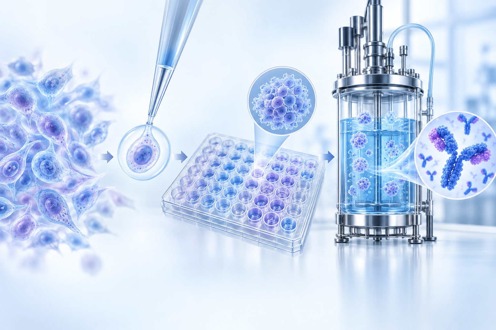
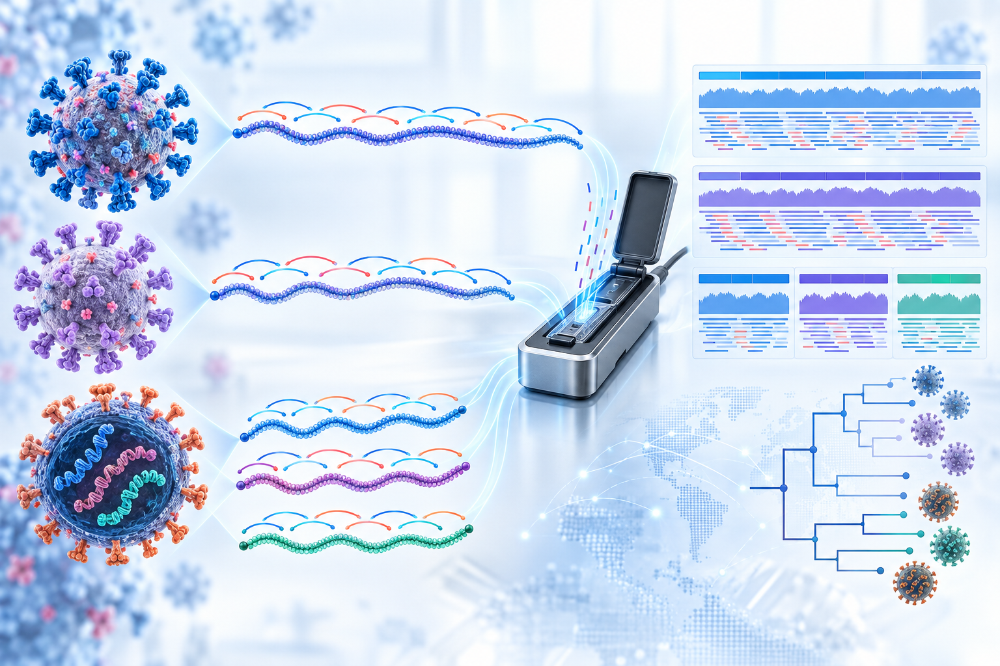
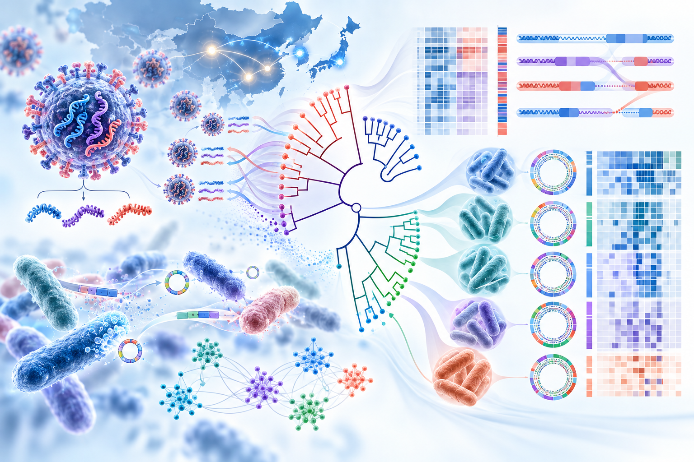
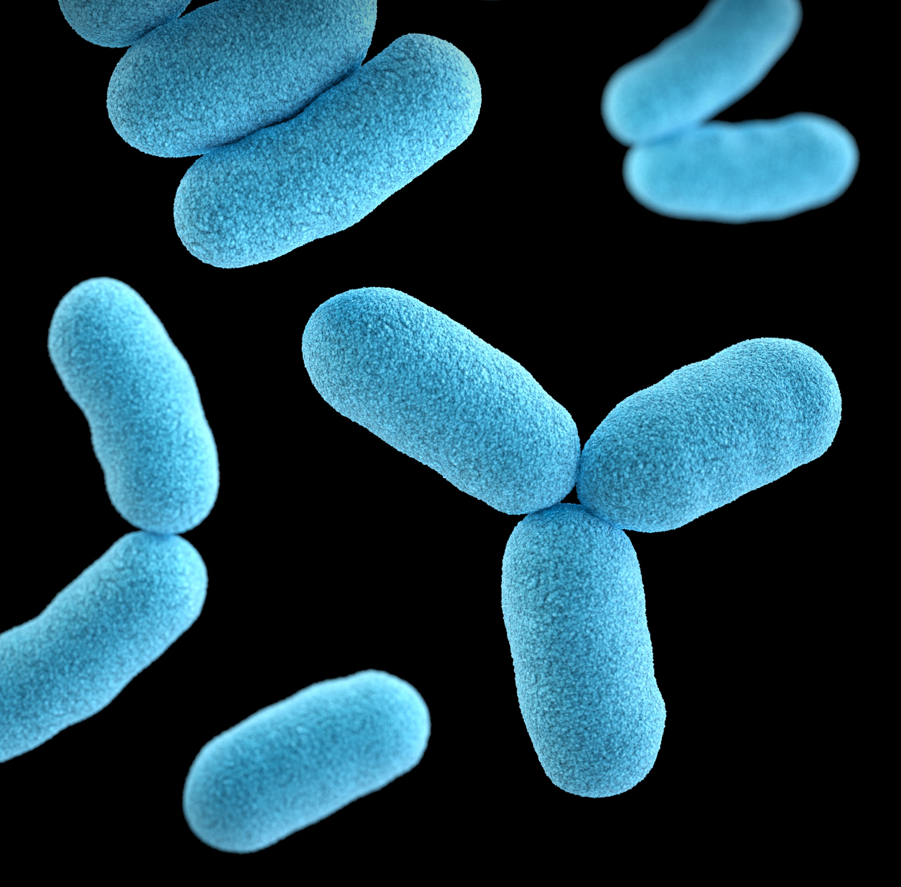
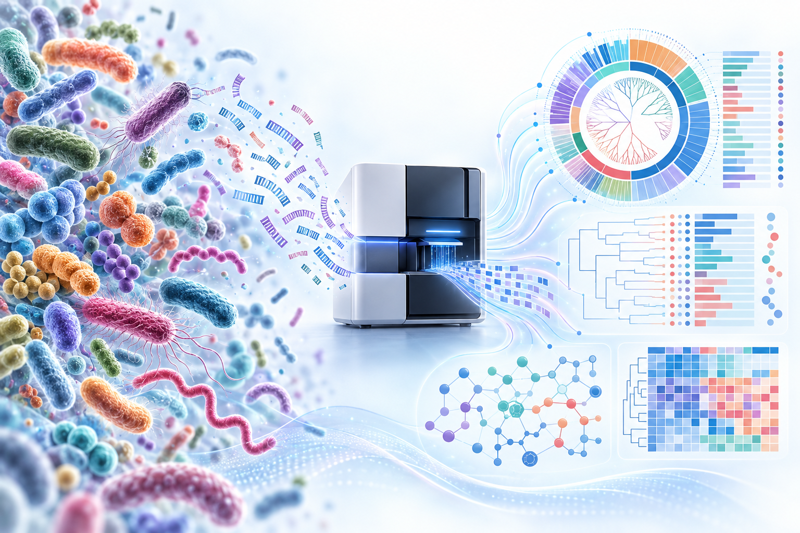

Research portfolio
Questions shaped by biology.
Answers sharpened by data.
Six connected research areas spanning cellular engineering, genome-scale measurement and reproducible biological interpretation.
Understanding CHO cells through Multi-Omics
I integrate whole-genome sequencing, transcriptomics and metabolomics to characterize CHO cell states and identify molecular features associated with productivity and biopharmaceutical performance.

From clone selection to productive cell lines
I study CHO cell-line development through clone screening, cellular characterization and data-driven evaluation, with the goal of supporting robust and productive biopharmaceutical manufacturing.

Viral whole-genome sequencing & surveillance
I develop amplicon-based protocols and analysis workflows that make complete viral genomes accessible rapidly and reliably. This work supports viral diagnostics, evolutionary analysis, pathogen surveillance and outbreak response.
Selected studies

Evolutionary relationships at genome scale
I combine phylogenetic inference, average nucleotide identity and comparative genomics to resolve evolutionary relationships and reveal genomic differences among viral and bacterial lineages.
Selected studies

Microbial discovery and classification
From anaerobic and aerobic cultivation to physiological and biochemical characterization, I investigate bacterial diversity and establish the evidence required for accurate taxonomic classification.
Selected study

Community structure, function & reproducible analysis
I use marker-gene and whole-metagenome approaches to profile microbial communities, connect taxonomic patterns with biological function and build reproducible workflows from raw sequencing reads to interpretation.
